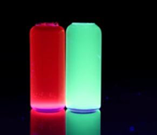
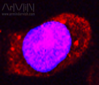
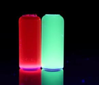
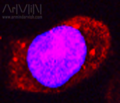

Nanopore
for single-molecule and single-cell analysis
Gold Nanodots
for fluorescent labelling of HIV attachment inhibitors
 



Layered Nanohydroxides
for theranostic applications
- Selected Publication and Presentations
Nanopore
for single-molecule and single-cell analysis
Nanopore sensing technology with biological or solid-state pores has attracted significant attention over the past decade especially for next-generation DNA sequencing. The key sensing paradigm is to monitor ionic current through a nanopore in a thin film that separates two chambers (cis and trans chambers). Charged analytes are then electrokinetically driven through the pore, which will cause unique modulation of ionic current (resistive pulse or current blockade). The characteristics of the ionic current blockade events can be associated to physical properties of the translocating species (e.g. size, shape, surface charge , strandedness, folding, etc.) My research is particularly focused on the development of nanopore-based analytical devices for characterization of viruses, viral proteins and nucleic acids. Click on following galleries to learn more.
Gold Nanodots
for fluorescent labelling of HIV attachment inhibitors
In this project I made fluorescent gold quantum dots otheriwse known as gold nanodots to label HIV entry inhibitors and visualize their interactions with HIv envelope protein. Using amino acids, proteins or alkyl thiols as capping agent, nanodots of various size and optical properties were synthesized. The nanodots were then conjugated to novel HIV entry-inhibitors of the peptide triazole family using EDC-NHS or SMCC chemistry. The peptide-nanodot conjuagte was then used to image and study interactions with cells that expressed HIV envelope proteins. Click on following galleries to see more.
Layered Nanohydroxides
for theranostic applications
Layered Nano Hydroxides(LNHs), well known as hydrotalcite-like materials or anionic clays are a class of hybrid layered materials with nanoscale interlayer space that can protect and carry small-molecule therapeutics. In this work, I synthesized a gadolinium-containing LNh by replaced some of the Mg/Al ions in the more common Mg/Al LNH. The inclusion of Gadolinium in this Mg/Gd/Al LNH, can alter the magnetric properties of LNH and make it a suitable contrast agent for MRI while retaining its drug carrying properties. Furthermore, by immobolization of folic acid, as a tumor-targetting agent, on the surface of these nanoinorganics, a potential multifunctional carrier for anti-cancer theranostic applications was developed. Click on following galleries to see more.
"As for the future, your task is not to foresee it, but to enable it"
~Antoine de Saint-Exupéry
"Copyright (c) 2014 Armin Darvish. All Rights Reserved"